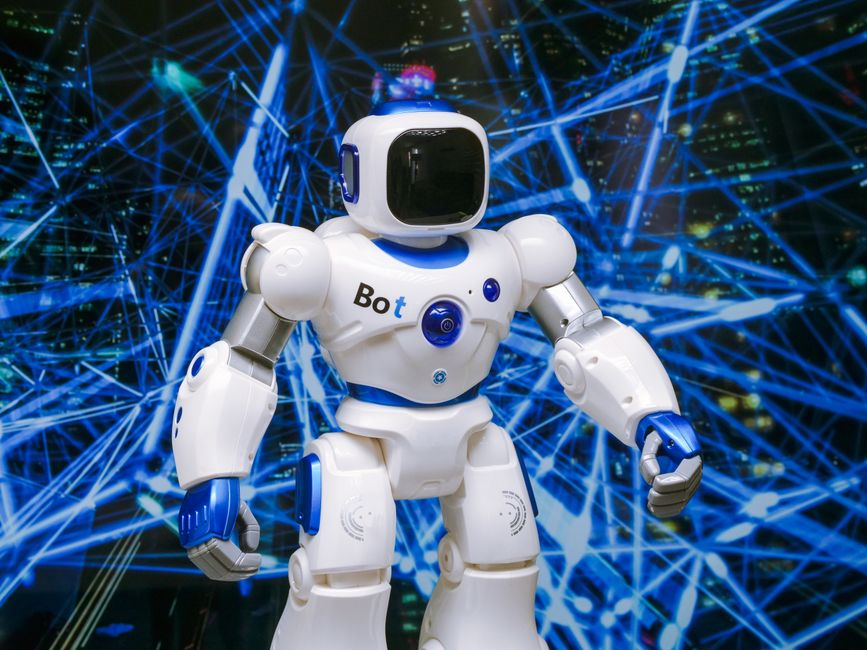

From the thrilling pages of science fiction to the cutting edge of engineering labs, humanoid robots have always captured our imagination. These incredible machines, designed to look and move like us, are no longer just a dream. With the power of Artificial Intelligence (AI) as their brain, humanoid robots are stepping out of the workshops and into our world, promising a future where robots don't just build cars, but walk alongside us, assist us, and even learn from us. Let's dive into the fascinating world where metal meets mind!
What Exactly are Humanoid Robots?
Imagine a robot that has two legs, two arms, a torso, and even a head, just like you! That's a humanoid robot. Unlike industrial robots that are often fixed in one place or have very specialized shapes, humanoids are built to mimic the human form and our unique way of moving.
Why Build Robots Like Humans?
It might seem like a complex challenge to make a robot walk on two legs, but there's a brilliant reason behind it:
- Navigating Human Environments: Our world is designed for humans – stairs, doorways, tools, furniture. A robot that can move and interact like a human can more easily operate in these spaces without requiring massive re-engineering of our surroundings.
- Human-Robot Interaction: A human-like form can make it easier for people to understand and interact with robots. It can foster a sense of familiarity and trust, which is crucial for robots working in homes, hospitals, or public spaces.
- Performing Human Tasks: Many jobs require dexterity and the ability to use tools designed for human hands. Humanoid robots are being developed to perform these complex tasks, from assembling products to helping in disaster relief.
The ability to walk on two legs, known as bipedal locomotion, is one of the most significant challenges and triumphs in robotics. It requires incredible balance, coordination, and sophisticated control systems.
The Brain Behind the Brawn: Artificial Intelligence
A humanoid robot without AI is just a fancy statue. AI is the secret sauce that brings these machines to life, allowing them to perceive, think, learn, and act. Think of AI as the robot's brain, constantly processing information and making decisions.
How AI Powers Humanoids:
- Perception: Using cameras (eyes), microphones (ears), and various sensors (touch, proximity), AI helps robots understand their surroundings, identify objects, recognize faces, and even interpret human emotions.
- Decision-Making: Based on perceived information and programmed goals, AI algorithms decide the robot's next action – whether to walk forward, pick up an object, or respond to a question.
- Learning: Through techniques like Machine Learning and Deep Learning, robots can learn from experience, adapt to new situations, and improve their performance over time. This is how they get better at walking on uneven terrain or manipulating delicate objects.
- Movement Control: AI manages the complex coordination of hundreds of motors and joints, ensuring smooth, balanced, and precise movements, especially for challenging tasks like walking or climbing stairs.
Here's a simple conceptual example of how AI might make a decision for a humanoid robot:
# Simple AI decision-making for a humanoid robot
def decide_action(proximity_sensor_data, vision_analysis):
# proximity_sensor_data: distance to nearest object (in meters)
# vision_analysis: a list of identified objects/actions from camera input
if proximity_sensor_data < 0.5: # Object too close (e.g., less than 0.5 meters)
print("Robot: Object detected too close! Initiating evasive maneuver.")
return "Evasive Maneuver" # Avoid collision
elif "human" in vision_analysis and "waving" in vision_analysis:
print("Robot: Human detected waving. Waving back.")
return "Wave Back" # Engage in social interaction
elif "door" in vision_analysis and "open" in vision_analysis:
print("Robot: Open door detected. Proceeding through door.")
return "Proceed Through Door" # Navigate environment
else:
print("Robot: No specific threat or interaction detected. Continuing current task.")
return "Continue Task" # Default action
# Example usage (in a real robot, these inputs would come from sensors)
# print(decide_action(0.3, ["wall"])) # Output: Robot: Object detected too close! Initiating evasive maneuver.
# print(decide_action(1.5, ["human", "waving"])) # Output: Robot: Human detected waving. Waving back.
# print(decide_action(1.0, ["table", "cup"])) # Output: Robot: No specific threat or interaction detected. Continuing current task.
Pioneers in the Humanoid Race
Several companies and research institutions are pushing the boundaries of what humanoid robots can do. Let's look at some of the most famous ones:
Boston Dynamics: The Acrobats of Robotics
When you think of incredibly agile robots, Boston Dynamics often comes to mind. Their humanoid robot, Atlas, is a marvel of engineering. Atlas can run, jump, climb, lift heavy objects, and even perform parkour! Its ability to dynamically balance, recovering from pushes and navigating complex terrain, is truly groundbreaking. While Atlas is primarily a research platform, its advancements in bipedal locomotion and dynamic control are paving the way for future practical humanoids. Their quadruped robot, Spot, also showcases their mastery over dynamic movement.
Tesla Optimus: A Robot for Everyone?
Elon Musk's company, Tesla, known for its electric vehicles, has also thrown its hat into the humanoid ring with Tesla Optimus (also known as the Tesla Bot). The vision for Optimus is to create a general-purpose humanoid robot that can perform repetitive, dangerous, or boring tasks, potentially even helping in homes. While still in its early stages compared to Atlas, Optimus aims for mass production and affordability, which could revolutionize the robotics industry. The challenge for Optimus lies in developing robust AI and dexterous manipulation at scale.
Challenges and the Path Forward
Building a fully functional, intelligent humanoid robot is incredibly difficult. Here are some of the major challenges:
- Energy & Battery Life: All those motors and computers consume a lot of power. Making a robot operate for long periods on a single charge is a huge hurdle.
- Dexterity & Manipulation: Human hands are incredibly complex. Giving robots the same level of fine motor control and touch sensitivity is a massive engineering feat.
- Robust AI: AI needs to be reliable, adaptable, and safe in unpredictable real-world environments, not just controlled lab settings.
- Cost: High-tech components and complex engineering make these robots very expensive, limiting their widespread adoption.
- Ethics & Safety: As robots become more autonomous and integrated into society, questions about safety, responsibility, and the ethical implications of AI become crucial.
“The future of robotics is not about replacing humans, but about augmenting human capabilities and creating a safer, more productive world.”
Human-Robot Interaction: A Future Together
As humanoid robots become more sophisticated, how we interact with them will evolve. We might use natural language commands, gestures, or even brain-computer interfaces. These robots could become companions for the elderly, assistants in hospitals, educators in classrooms, or helpers in dangerous industrial settings. The field of human-robot interaction focuses on designing these interactions to be intuitive, safe, and beneficial for people.
Your Role in the Robotics Revolution!
The world of humanoid robots and AI is buzzing with innovation, and India has a huge potential to contribute. Imagine robots helping farmers, assisting in healthcare in remote villages, or even participating in space exploration! The journey to perfect these machines is ongoing, and it needs bright, curious minds like yours.
If you're fascinated by robots that can walk, talk, and learn, this is the perfect time to dive into STEM (Science, Technology, Engineering, and Mathematics). Learn to code, explore electronics, experiment with mechanics, and understand the principles of AI. Whether you dream of designing the next Atlas, programming an Optimus, or creating a unique robot to solve local problems, your skills will be invaluable.
At MakerWorks, we believe in empowering the next generation of innovators. Start your journey today – join a robotics club, take an online course, or simply start building and experimenting. The future of humanoids is not just in the hands of engineers today, but in the imaginations of young learners like you!
What kind of humanoid robot do YOU dream of building? Share your thoughts with us!